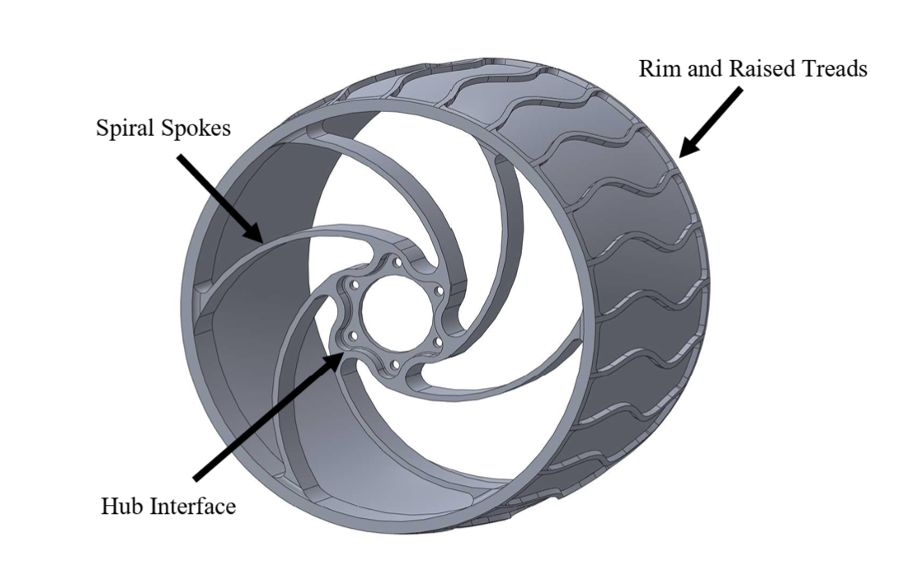
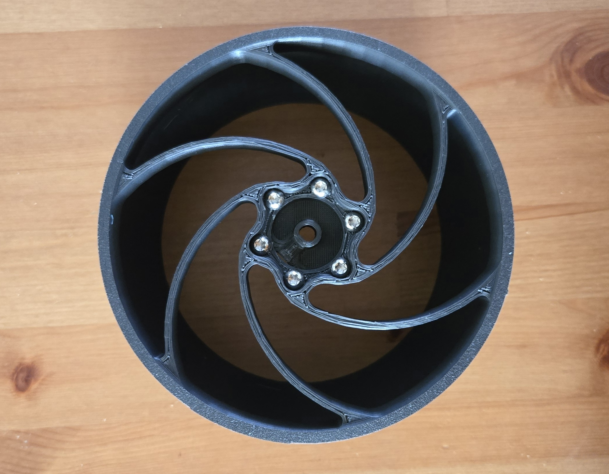
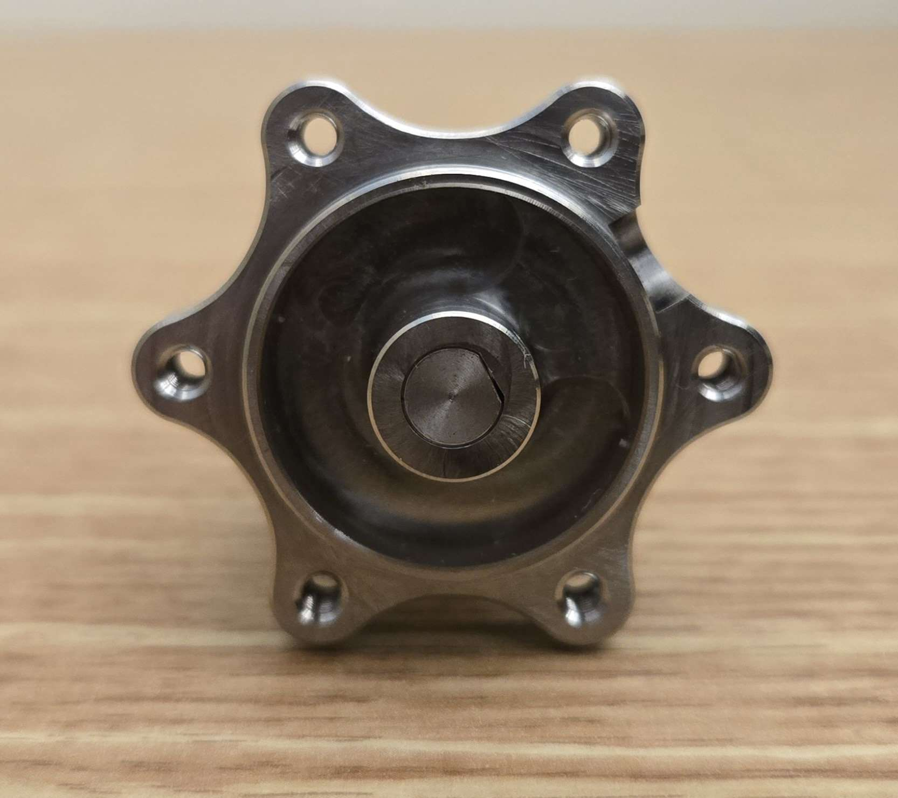
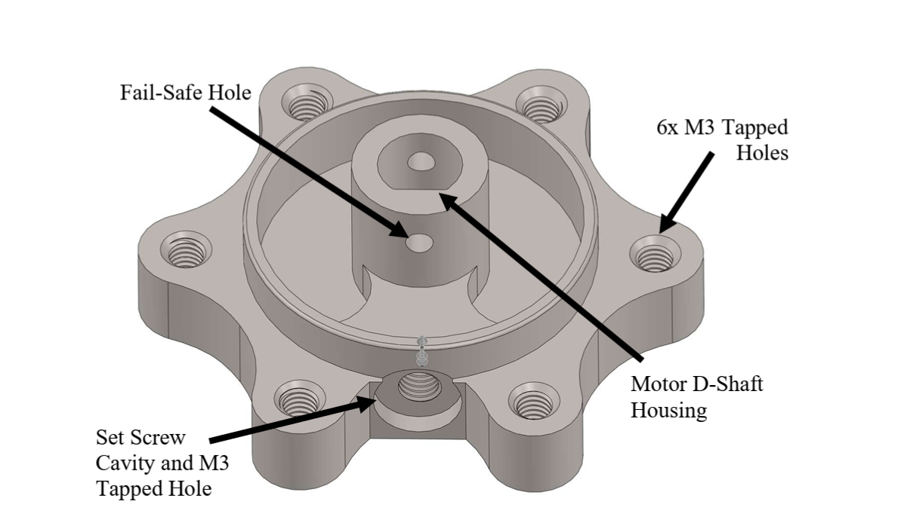
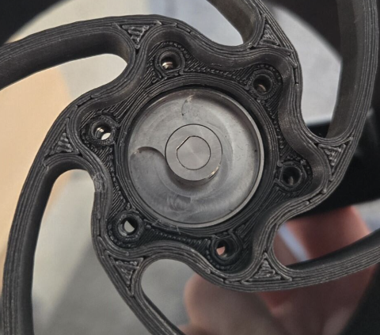
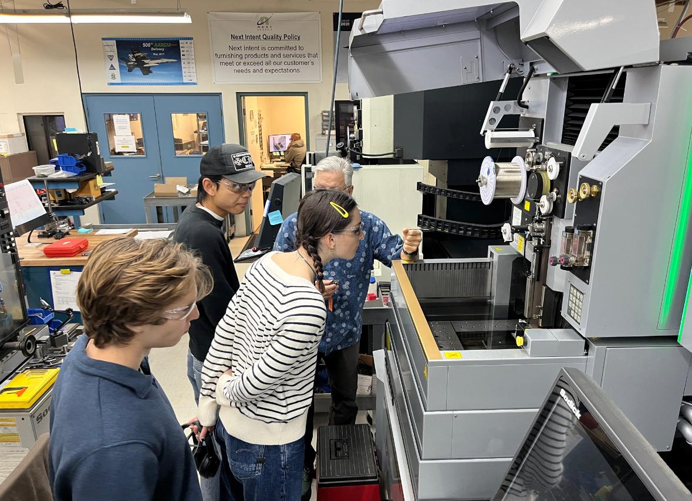
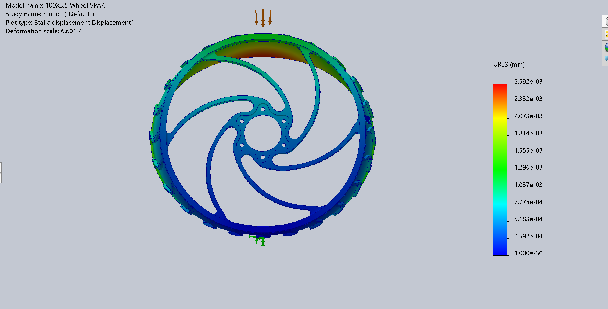
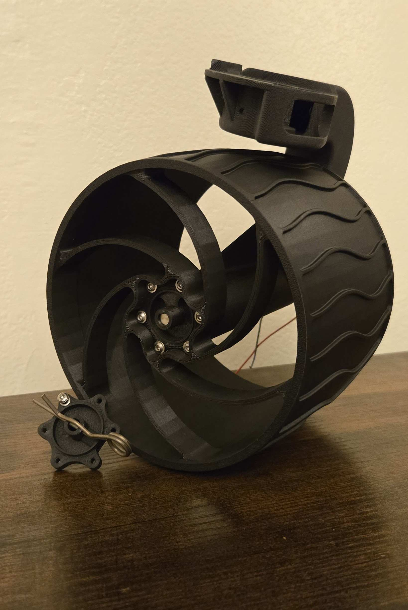
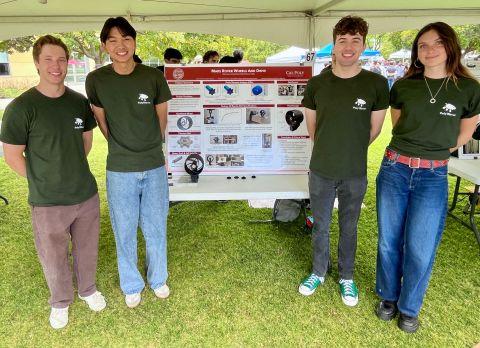

Wheel + Hub Assembly.
Poly1Rover
Mars Rover Wheel + Hub Subsystem
Designed a manufacturable wheel and hub subsystem for Cal Poly's Poly1Rover, balancing impact compliance, reliable torque transfer, and compatibility with the existing rover drive architecture.



Six curved spokes provide a longer, more compliant load path than straight radial spokes while distributing loads around the wheel.
Twenty-four raised, wavy treads provide traction while limiting large gaps where rocks and debris could become trapped.
A six-bolt interface connects the wheel to the separate hub, allowing the wheel to be removed without disturbing the motor-shaft connection.



A matching D-shaped bore transfers motor torque through the hub while maintaining shaft alignment.
A radial set screw secures the hub to the motor shaft during normal operation.
A transverse pin provides secondary mechanical retention if the primary shaft connection loosens.
Six M3 fasteners connect the hub to the wheel through a controlled bolt pattern for repeatable assembly.

Manufacturing drawings controlled the wheel-to-hub interface and fastener locations for repeatable assembly.
Geometry was revised with Next Intent to accommodate machining, tooling access, and practical manufacturing constraints.
Worked directly with Next Intent through design reviews to translate the CAD into manufacturable hardware.

SolidWorks FEA was used to evaluate wheel deformation, load transfer through the spiral spokes, and structural performance.

Mechanical Design / FEA / DFM
Interfaces / GD&T / Retention
Prototype / Assembly / Testing
